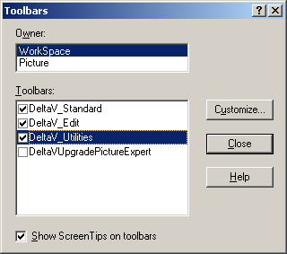
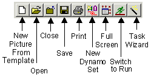

Toolbar basics
DeltaV Operate toolbars provide dozens of buttons that provide quick access to frequently used functions in DeltaV Operate configure mode. The buttons are in two major groups or "owners." Under the WorkSpace owner there are three toolbars, and under the Picture owner there are nine toolbars, as well as a "toolbox" that contains some of the most commonly used buttons from both owners.
DeltaV Operate users with configuration privileges have a great deal of control over which toolbars are displayed while they work, where the toolbars are positioned, and even which buttons appear on each toolbar. The toolbar settings are specific for each DeltaV node, not each individual user. More advanced users can create new buttons and new toolbars, which can then be shared with other nodes.
This section contains basic information on the toolbars that are available and how to customize them for your working environment.
Toolbar Owners
The toolbars are separated into two groups (owners): WorkSpace and Picture. The WorkSpace toolbars are available whenever DeltaV Operate is in configure mode; in addition, Picture toolbars are available when a picture (not a schedule) is open in configure mode. The toolbars that are displayed in the configuration environment do not show in run mode.
Showing and Hiding Toolbars
You can show or hide any toolbar by selecting or deselecting it from the Toolbars dialog box in the configuration environment. Open the dialog box by selecting toolbars from the WorkSpace menu. Select the owner for the toolbars. Then select the check box of each toolbar you want to display and clear the check box for each toolbar you want to hide. When you select a toolbar or clear a selection, that toolbar name is repositioned at the end of the list of available toolbars after you close the dialog box. Switching to run mode hides all toolbars displayed in configure mode.


Positioning and Docking Toolbars
The WorkSpace toolbars are available for display in DeltaV Operate configure mode. By default, they are initially positioned under the menu bar when DeltaV Operate first opens. Also by default, some of the Picture toolbars appear along the top of the workspace, while others are normally positioned along the bottom. You can change any toolbar location by dragging and dropping it to a new position along any edge of the WorkSpace or screen; this is called docking. A toolbar can also float anywhere on the system tree or WorkSpace, in which case a title bar appears above the toolbar to make it easy to quickly drag the toolbar to a new location.
The DeltaV Toolbox is a collection of the most frequently used WorkSpace and Picture buttons. It normally floats on top of the current picture and can be easily moved by dragging the title bar. It can be reshaped by dragging any of its sides.
The Default WorkSpace Toolbars
The default WorkSpace toolbars are shown below. The default Picture toolbars are in a later topic, in the Creating Pictures section.
The Standard Toolbar
The Standard toolbar, shown in the following figure, provides buttons that let you create, open, and print documents It also provides buttons for creating dynamo sets, switching to Run mode, and opening the Task Wizard to access picture creation experts.
